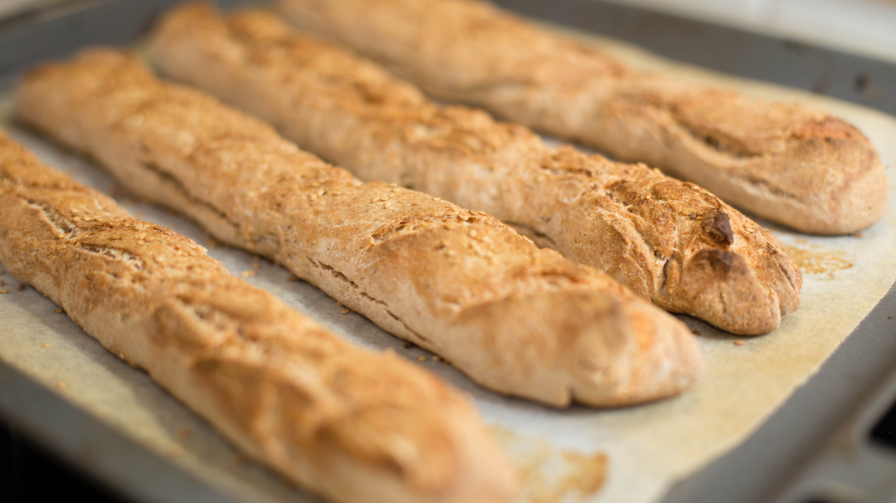

Baguette

Description
The baguette is a variety of French bread distinguishable by its much
greater length than width, and noted for
its very crispy crust. The standard girth size of a baguette is about
5 or 6 cm, and it can be up to a meter in length.
One loaf typically weighs 250g (8.8 ounces).
It may also be referred to as a French loaf or French stick.
Ingredients
- Active dry yeast (95–110°F / 35–43°C) -
1¼ teaspoons / 0.18 ounces / 5 grams
- Very warm water (105–115°F / 41–46°C) - 1¼ cups / 2 ounces / 59.25 grams
- Unbleached all-purpose floor - 2¼ cups / 18 ounces / 500 grams
- Salt - 2¼ teaspoons / 0.47 ounces / 13.5 grams
- Cool water (75°F / 24°C) - 1¼ cups / 10.5 ounces / 295.25 grams
Steps
- Dough
- Using a fork, stir together the yeast and warm water in a small bowl
until the yeast dissolves. Let stand for 3 minutes.
- Combine the flour and salt in a large bowl.
- Mix the cool water, yeast mixture and flour gently
with your fingers to form a mass.
- On a lightly-floured work surface, knead for 5 minutes.
The dough should now be supple and resilient.
- Cover the dough with plastic wrap or a light towel.
- Let the dough rest for 25 minutes—this period is
called the autolyse.
- Knead the dough for 6–8 minutes. Overkneading could make an
overly tough dough; you're looking for a dough that is
smooth and stretchy.
- First rise
- Lightly oil a bowl, and turn the dough in the bowl to coat
it with oil. Cover the bowl with a tea towel.
- Let rise at room temperature (75–77°F / 24-25°C) for 1½–2 hours
(until the volume doubles).
- Gently deflate the dough. Fold it over itself, then
reshape into a ball. Cover again with a tea towel.
- Let rise for 1¼ hours or until it doubles again.
- Once again, gently deflate the dough. Reshape into a round
and cover, letting it rise for about 1 hour.
- Shaping
- On a lightly floured surface, divide the dough into
3 equal pieces (about 10 ounces each).
- Take one piece and gently stretch into a rectangle,
leaving some large bubbles in the dough.
- Fold the top third down and the bottom third up.
-
Form the loaf into a log by rolling the dough over from left
to right and sealing the seam with the heel of your palm.
- Fold the dough over about a third of the way each time, seal
the length of the loaf, then repeat.
- You want to gently draw the skin tight over the surface of the baguette
while leaving some air bubbles in the dough.
Seal the seam, being careful
not to tear the skin of the dough or deflate its airy structure.
- Set aside on the work surface to relax before elongating it, and repeat the
shaping process with remaining pieces of dough.
- Now elongate each baguette, starting with the first one you shaped, by
rolling it back and forth on the work surface.
Begin with both hands over
the center of the loaf and work them out to the ends until the loaf reaches
the desired length.
Make sure that the loaves don't exceed the length
allowed by the oven.
- Second rise
- Place the finished loaves on a peel or upside down baking sheet lined
with parchment paper and generously sprinkled with cornmeal or on a
baguette pan.
- Cover the loaves with well oiled plastic or a floured cloth and let rise for
30 to 40 minutes until the loaves are slightly plump but still not doubled
in volume.
The final rise is short, because you want the baguettes to be
slightly under-proofed; this will give them a better oven spring, resulting
in loaves with a light,
airy crumb and more flared cuts.
- Preparing for baking
- Thirty minutes before baking, preheat the oven to 500°F.
-
Place a baking stone in the oven to preheat, and place
an empty water pan directly under the stone.
- Use a very sharp razor blade or lame to make 3–5 slashes, depending on the
length of your loaves, on the top of each baguette. The cuts should run
from one end of the loaf to the other, rather than across it, and the blade
should be held at a 30° angle to the loaf so that the cuts pop open
in the oven.
Be careful not to press down too hard, or you may deflate
the loaves.
- Baking
- Gently slide the loaves onto the preheated stone, or place the baguette mold
in the oven. Pour 1 cup of very hot water into the water pan
and quickly
close the oven door. After 1 minute, mist the loaves and
oven walls 6–8 times and close the door. After 2 more minutes,
spray the loaves and the oven walls again.
- Bake for 12 minutes, then lower the oven temperature to 400°F and bake for
25–30 minutes longer until the loaves are golden brown and crisp.
Move them to a rack to cool.
- Enjoy your baguettes still slightly warm with some soft,
ripe French cheese and a glass of wine.
Home
Back to top